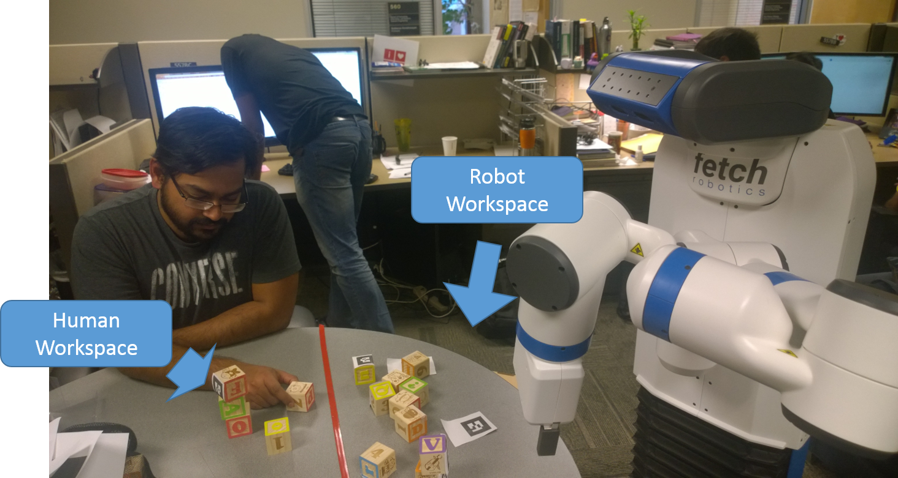

The current research focus of Cooperative Robotic Systems (CRS) Lab is on the theories and practices of areas within the broad fields of artificial intelligence and robotics, as well as emerging interdisciplinary research areas that integrate these two fields (e.g., humans in the loop of automated systems and cyber-physical systems). The goal of our research is to bring humans and automated systems seamlessly together to improve our everyday lives (e.g., in smart homes and for elderly care), and to achieve complex tasks that has never been achieved before (e.g., human-robot teaming in urban search and rescue and decision support systems). To accomplish this, new technologies must be developed to extend traditional Perception and Modeling, Decision Making, Learning and Adapatation and Communication capabilities of intelligent agents to allow them to work with humans in the loop (Check out CRS publications HERE):
Perception and Modeling

Here, we are especially interested in developing new perception capabilities instead of relying on traditional computer vision techniques to extract
human mental and affective states for human-robot teaming.
In addition, we also work on designing novel model representations for human behaviors and mental states, which can be learned from a small amount of noisy and incomplete data.
The output of our research here is expected to introduce novel methods to perceive humans, especially of their mental states, as well as novel models to represent these states.
In decision making, we are working towards making robots aware of humans so that they can take the human's physical and mental states into account when choosing their own actions.
We are especially interested in how to make robot behaviors understandable to humans so that their interaction can be nonintrusive without interruption.
The output of our research here is human aware planning and decision making modules that can be incorporated into futuristic robotic teammates.
During interaction, robots must adapt to human feedbacks to improve the teaming performance while considering the fact that the human may be mutually adapting! At the same time, learning and adaption also requires the robot to learn and adapt to humans with diverse experiences and preferences.
We are interested in robot learning the preferences of the humans and how the robots can adapt to them.
The output of our research here will enable robotic teammates to mutually adapt to human teammates to create fluent interaction in the long term, which is a critical capability for building robotic teammate.
We are interested in investigatin novel modalities of communication. These communication modalities complement the traditional communication techniques. We are also interested in understanding what should be communicated as well as minimal communication.
The output will allow a mixture of modalities and communication is context and human aware.
The research agenda of the Cooperative Robotic Systems (CRS) laboratory includes the development of novel perception and modeling methods, robust decision making algorithms, mutual leanring and adapation techniques, context and human aware communication, as well as system integration and evaluation for cooperative and intelligent agents.